Projeto VII · Trabalho de Conclusão de Curso · Design PUCPR
O designer e a IA de código
BASE8, um hub de capacitação para ampliar o alcance da atuação em design.
Bruno Shigueharu de Camargo Higashi
Curitiba · 2026
Pontifícia Universidade Católica do Paraná · Escola de Belas Artes · Curso de Design
O designer e a IA de código
BASE8, um hub de capacitação para ampliar o alcance da atuação em design
Bruno Shigueharu de Camargo Higashi
Curitiba · 2026
Trabalho de Conclusão de Curso apresentado ao curso de Design da Pontifícia Universidade Católica do Paraná (PUCPR), como requisito parcial para a obtenção do grau de Bacharel em Design.
Orientadores: Luciane Hilu, Gabriela Unger Unruh e Carlos Roberto Romaniello
Resumo
Este trabalho investiga como o designer pode ampliar o alcance da própria atuação com o apoio da inteligência artificial (IA) de código, ou seja, ferramentas que escrevem e executam código a partir de pedidos em linguagem natural. A pergunta projetual é: como posso potencializar as competências do designer e ampliar o alcance de sua atuação incorporando, por meio da IA de código, expertises técnicas que excedem sua formação? O projeto segue o Duplo Diamante. Na fase de descoberta, reuni pesquisa bibliográfica, dados de mercado, uma entrevista e um questionário com profissionais de tecnologia e uma pesquisa inicial com designers. Na fase de definição, fechei a pergunta projetual e o DNA de marca, com o valor central potencialização e os pilares holística, acessibilidade, conexão e inovação. Na fase de desenvolvimento, um benchmarking de estratégias orientou a solução: o BASE8, um hub web e mobile que capacita designers a usar ferramentas de IA de código, com trilha de aprendizagem, atividades práticas, comunidade e perfil. A entrega é um protótipo de alta fidelidade, construído em código com as mesmas ferramentas que o hub ensina, acompanhado da identidade visual, de um estudo de viabilidade com modelo de negócio e projeção em três cenários e do plano da campanha de lançamento “Até onde?”. O registro do processo mostra que a IA de código ampliou o alcance e a velocidade do trabalho, mas que as decisões de projeto, o julgamento estético e a validação continuaram com o designer.
Palavras-chave: design; inteligência artificial; IA de código; capacitação profissional; Duplo Diamante.
Abstract
This work investigates how designers can broaden the reach of their practice with the support of AI coding tools, that is, tools that write and run code from natural language requests. The design question is: how can I enhance the designer’s skills and broaden the reach of their practice by incorporating, through AI coding tools, technical expertise that goes beyond their training? The project follows the Double Diamond. In the discovery phase, I gathered a literature review, market data, an interview and a survey with technology professionals, and an initial survey with designers. In the definition phase, I settled the design question and the brand DNA, with empowerment as the core value and holistic, accessibility, connection and innovation as its pillars. In the development phase, a benchmarking of strategies guided the solution: BASE8, a web and mobile hub that trains designers to use AI coding tools, with a learning path, hands-on activities, a community and a profile. The deliverable is a high-fidelity prototype, built in code with the same tools the hub teaches, together with the visual identity, a feasibility study with a business model and a three-scenario projection, and the plan for the launch campaign “Até onde?” (“How far?”). The record of the process shows that AI coding tools broadened the reach and speed of the work, while design decisions, aesthetic judgment and validation remained with the designer.
Keywords: design; artificial intelligence; AI coding tools; professional training; Double Diamond.
Sumário
01Introdução06
02Pesquisa exploratória11
03Público-alvo: o designer generalista18
04Pesquisa de campo23
05Pergunta projetual e DNA de marca29
06Benchmarking de estratégias35
07A solução proposta43
08Identidade visual48
09O protótipo do BASE859
10Viabilidade e modelo de negócio66
11Plano de divulgação: “Até onde?”72
12Processo de projeto com IA de código80
13Considerações finais84
—Referências88
01
Introdução
A IA de código abriu a construção de produtos digitais a quem não programa. Falta ao designer um caminho para usá-la.
O problemae o contexto
Para quem programa, a IA de código já é rotina. No design, ela ainda é pouco conhecida, e falta um caminho para usá-la.
84% dos desenvolvedores já usam IA para programar (DigitalApplied; Uvik, 2026).
Entre os designers e criativos entrevistados, nenhum conhecia o potencial da IA de código.
O assunto quase não circula no design, na ilustração e na música, e os materiais de ensino são pensados para quem já programa.
A barreira não é a dificuldade: é a distância entre o mundo criativo e essas ferramentas.
“Mais uma insegurança do que uma realidade.” Designer, sobre por que nunca tentou usar IA de código.
01 · Introdução
Objetivoe pergunta
Projetar o BASE8, um hub web e mobile que capacita designers a usar IA de código, e construí-lo como protótipo de alta fidelidade com as ferramentas que ele ensina.
Pergunta projetual (seção 5.1.1)
“Como posso potencializar as competências do designer e ampliar o alcance de sua atuação incorporando, por meio da IA de código, expertises técnicas que excedem sua formação?”
O projeto é o seu próprio caso: como designer, dirigi a construção de um produto digital com apoio de IA de código (capítulo 12).
01 · Introdução
Método:Duplo Diamante
Usei o modelo do Design Council, com quatro fases. A entrega é um protótipo navegável em código, não um aplicativo em operação.
Discover · cap. 2 a 4
Descobrir
Pesquisa bibliográfica, dados de mercado e pesquisa de campo.
Define · cap. 5
Definir
Pergunta projetual e DNA de marca.
Develop · cap. 6 a 11
Desenvolver
Benchmarking de estratégias, solução, identidade, protótipo e plano de divulgação.
Deliver · cap. 13
Entregar
Protótipo navegável, identidade visual, modelo de negócio e campanha de lançamento.
Os capítulos 1 a 4 foram escritos antes de outubro de 2026 e usam “IA agêntica” e “IA generativa”. Do capítulo 5 em diante, o termo é “IA de código”.
01 · Introdução
Eixosde pesquisa
O roteiro exploratório de agosto de 2026 reuniu 12 tópicos iniciais em quatro eixos. O quinto surgiu durante a busca.
Eixo 1
IA de código e Claude Code
O que é a ferramenta e como se posiciona frente a Copilot, Cursor e outras.
Eixo 2
Design × programação
Quanto o designer precisa entender de código e o que já reduz essa barreira.
Eixo 3
Claude Code no design
Como designers usam agentes de código e que lacunas existem.
Eixo 4
Design, gestão e processo
O Duplo Diamante fora do design: gestão, times ágeis e colaboração.
Eixo 5
Estado da arte e riscos
Frameworks de colaboração humano-IA, deskilling e delegação cognitiva.
01 · Introdução
02
Pesquisaexploratória
Cinco eixos, de agosto de 2026, para mapear o campo entre design, código e IA generativa.
Cinco eixosem síntese
O levantamento partiu do roteiro do capítulo 1. A maior parte dos dados vem de fontes de mercado, não de artigos revisados por pares.
Eixo 1
Agentes de código
O Claude Code lê o projeto inteiro, planeja, edita vários arquivos, roda testes e corrige o que falhou.
Eixo 2
Alfabetização técnica
Um conhecimento básico de código ajuda. O designer não precisa virar desenvolvedor full-stack.
Eixo 3
Uso no design
Há relatos e casos de fornecedores, mas nenhum estudo acadêmico sobre designers usando agentes de código.
Eixo 4
Duplo Diamante
Serve também à gestão e a times ágeis, como linguagem comum entre design, produto e engenharia.
Eixo 5
Riscos
A literatura alerta para deskilling, delegação cognitiva excessiva e fixação de design.
02 · Pesquisa exploratória
Adoçãoe confiança
Entre programadores, a IA de código já é rotina. Revisar passou a tomar mais tempo do que escrever.
84%
dos desenvolvedores já usam IA para programar, mas só 29% confiam totalmente no que ela gera.
DigitalApplied; Uvik, 2026
11,4h
por semana revisando código de IA, contra 9,8h escrevendo código novo.
DigitalApplied; Uvik, 2026
43%
das mudanças geradas por IA ainda precisaram de depuração manual.
02 · Pesquisa exploratória
Ganhosde produtividade
O ganho é real em tarefas específicas e bem delimitadas.
55%
mais rápido: desenvolvedores com GitHub Copilot em experimento controlado com 95 participantes.
GitHub Research, 2022
14–15%
mais problemas resolvidos por hora no suporte, e 30–35% entre os menos experientes.
Brynjolfsson et al., NBER
88%
das organizações usam IA em ao menos uma função de negócio.
McKinsey, 2025
US$ 37 bi
gastos pelas empresas em IA generativa em 2025, contra US$ 11,5 bi em 2024.
Menlo Ventures, 2025
02 · Pesquisa exploratória
Limitese riscos
A causa principal é organizacional: falta aprender a integrar a IA ao trabalho, não falta tecnologia.
95%
dos projetos-piloto de IA generativa nas empresas não geram impacto mensurável de P&L.
MIT, 2025
39%
das empresas relatam impacto mensurável no EBIT, mesmo com 88% de adoção.
McKinsey, 2025
40%+
dos projetos de IA agêntica devem ser cancelados até o fim de 2027.
Gartner
Klarna
substituiu atendentes de forma agressiva, perdeu qualidade e recontratou parte da equipe.
Caso documentado
02 · Pesquisa exploratória
Precedentebrasileiro
O trabalho mais próximo que encontrei. Não há sobreposição de escopo, método nem objeto.
Dissertação USP (Souza, 2025)
TCC (fase exploratória)
Programa
Mestrado Profissional em Empreendedorismo (FEA-USP)
Graduação em Design
Método
Design Science Research, com sessões Think Aloud
Estudo de caso e análise crítica do uso de IA
Objeto
App de planejamento de viagens de lazer
Designer usando IA para atuar fora do seu domínio
Foco
Um setor específico (turismo)
O fenômeno da ampliação de domínio
Fonte: Tabela 1, elaborada pelo autor (2026). Na fase exploratória, o estudo de caso era um produto físico, depois substituído pelo BASE8.
02 · Pesquisa exploratória
Lacunase posicionamento
Ninguém estudou ainda o profissional individual que usa um agente de IA para ir além do que a formação cobre. É esse o espaço do TCC.
A IA generativa é muito usada na prototipagem e pouco na conceituação e em decisões fora do domínio do designer.
Os estudos sobre IA como “co-founder” vêm da administração e quase não se cruzam com o design.
Não encontrei precedente brasileiro com o mesmo recorte; o mais próximo é a dissertação da USP.
Frameworks de colaboração humano-IA (COFI, Three-Level) ainda não foram aplicados ao designer generalista.
02 · Pesquisa exploratória
03
Público-alvo:o designer generalista
Quem é o designer que quer ir além da própria formação, e o que ele busca da IA.
O designere a IA
O designer já usa IA no dia a dia, principalmente para imagem e texto. O passo seguinte é usá-la para construir.
91%
dos designers usam IA toda semana em tarefas de design, contra 54% em 2025.
Designer Fund, 2026
71%
dos criadores já usam IA para visuais, marca ou posts.
Adobe News, 2026
65%
dos designers dizem assumir mais responsabilidades de produto e engenharia.
Designer Fund, 2026
03 · Público-alvo: o designer generalista
Áreasem alta
O público já usa IA e não precisa ser convencido a adotá-la.
UX/UI
Segue como a especialização mais procurada, puxada pelo comércio digital.
Motion design
Já aparece como exigência em 45% das vagas seniores, em levantamentos internacionais.
Product design
Cargos híbridos de interface, pesquisa e produto ganham relevância e salários mais altos.
Nichos
O especialista em um nicho enfrenta menos concorrência e cobra mais que o generalista.
Lacuna de negócio
Estudantes de design se sentem mais capazes de criar produtos; os de negócios, de vender (Christensen et al., 2023).
03 · Público-alvo: o designer generalista
O queeles buscam
Designers e empresas têm interesse. O que falta é um caminho guiado para transformar esse interesse em uso real.
73%
sentem crescer a expectativa sobre o que entregam com IA; só 28% das empresas atualizaram critérios.
Designer Fund, 2026
76%
das pequenas empresas usam IA, mas só 14% a incorporaram às operações principais.
Goldman Sachs, 2026
73%
dos donos de pequenos negócios se beneficiariam de mais treinamento e recursos.
Goldman Sachs, 2026
03 · Público-alvo: o designer generalista
Recortefinal
O que define o público é a posição do designer diante do limite do próprio domínio.
Antes (agosto de 2026)
Designer-empreendedor.
Limite nas áreas de negócio: mercado, preço, produção.
Depois (setembro a novembro)
Do início de carreira a gestores e fundadores.
Critério de posicionamento: a relação com o limite da própria formação.
Limite técnico: construir em código o que antes dependia de outra pessoa.
Comunicação simples e didática, com curva de aprendizado guiada.
O público mais inclinado à proposta já teve algum contato com IA. Quem nunca usou também é atendido pelo nivelamento (seção 7.2.1).
03 · Público-alvo: o designer generalista
04
Pesquisade campo
Entrevistei profissionais de tecnologia e ouvi designers para testar o que a literatura dizia.
Métodoe amostra
Três instrumentos qualitativos, de agosto a novembro de 2026: ouvir quem já usa IA de código e quem ainda não usa.
Um repositório interno de marca usado como contexto deixa os resultados alinhados à identidade.
Achado
Revisão obrigatória
Mesmo com uso diário, a revisão humana continua regra. A IA “acaba fazendo muita coisa muito rápido”.
Achado
Depende do papel da IA
Pedir opinião limita a criatividade; dar forma a uma ideia vaga a amplia.
Achado
Decisão intuitiva
Usar ou não a ferramenta segue o “feeling”, sem processo definido.
Recomendação
Entender o “como”
Para o designer, o essencial é entender como a IA chega ao resultado, não tratá-la como caixa-preta.
Perfil
Visão complementar
Analista de dados com dois anos de tecnologia: o olhar de quem usa IA de código no dia a dia, fora do design.
04 · Pesquisa de campo
Questionário(n = 5)
Os dois que discordam da restrição são os que têm contato regular com designers. A resistência parece vir da distância, não da técnica.
1,4
de 5 é a confiança em aceitar código de IA sem revisão cuidadosa. Nenhuma resposta acima de 2.
Resultado mais consistente
3,6
de 5 para “prefiro que designers não mexam em código”, com respostas divididas (5, 1, 5, 2, 5).
Opinião dividida
3,8
de 5 para a sensação de estar “perdendo prática” por deixar tarefas com a IA.
Risco percebido
4 de 5
usam IA de código todos os dias. Nenhum dos respondentes é designer.
Perfil da amostra
04 · Pesquisa de campo
Pesquisacom designers
Os designers acham que a IA consegue tudo, mas duvidam do que eles mesmos conseguiriam fazer com ela.
Duas respostas (R1 e R2). Nenhuma das duas usou IA para gerar código.
Só um tipo de projeto teve “sim” das duas: um sistema para organizar clientes e projetos.
O processo é imaginado como simples demais (horas) ou difícil demais (meses), sem revisar, ajustar e testar.
A barreira não é medo: é falta de necessidade no trabalho atual ou a sensação de complexidade.
As duas defendem o papel do designer: sem interferência humana, o resultado fica raso.
Daí a escolha de mostrar também capacidades simples da rotina: vetorizar, montar fluxogramas, automatizar brandbooks, editar vídeos.
04 · Pesquisa de campo
Sínteseda pesquisa de campo
Os achados de campo orientaram o recorte do capítulo 5 e o conteúdo do BASE8.
Revisão humana é regra em todos os perfis técnicos, mesmo com uso diário e maduro.
O resultado genérico depende mais do contexto de marca do que da ferramenta.
A familiaridade com a colaboração, não só com a ferramenta, pode explicar as diferenças de opinião.
O conteúdo do BASE8 precisa mostrar o processo real: pedido, revisão e ajuste.
04 · Pesquisa de campo
05
Pergunta projetuale DNA de marca
Fechamento da fase Define do Duplo Diamante: a pesquisa converge em uma pergunta, e a pergunta ganha um DNA de marca que orienta cada decisão.
Pergunta projetual
Como posso potencializar as competências do designer e ampliar o alcance de sua atuação incorporando, por meio da IA de código, expertises técnicas que excedem sua formação?
Potencializar, e não substituir. A IA de código é o meio, e não quem age. O que se incorpora é expertise técnica, e não conteúdo.
05 · Pergunta projetual e DNA de marca
Benchmarkingde DNA de marca
Analisei quatro marcas, a distâncias diferentes do problema, no mesmo modelo: valor, quatro diretrizes, oito direcionamentos e personalidade.
Referência
Valor
Diretrizes
Personalidade
Duolingo
Acessibilidade
Gamificação, personalização, irreverência, comunidade
Otimista, acolhedora
PAAR
Incorporação
Representação, mérito, estabilidade, estrutura
Disciplinada, patriótica
Patreon
Independência
Autoria, proximidade, sustentação, pertencimento
Íntima, encorajadora
PUCPR
Questionamento
Conexão, humanismo, excelência, inovação
Calorosa, encorajadora
Recusas registradas: a entrada pelo resultado passado (PAAR) e a assinatura recorrente (Patreon).
05 · Pergunta projetual e DNA de marca
Valor central · POTENCIALIZAÇÃO
Fazer o designer entregar, com qualidade profissional, o que a sua formação sozinha não daria conta.
Não é substituir o designer nem torná-lo programador. A competência central continua dele; o que muda é o entorno. Pergunta de mecanismo: como fazer a pessoa realizar algo que sozinha não conseguiria?
05 · Pergunta projetual e DNA de marca
Quatro pilares,oito vertentes
O DNA é uma síntese das quatro referências, e não uma escolha entre elas.
Holística: conduzir um projeto inteiro em outra área, vendo o todo.
Acessibilidade: entrar em uma área técnica sem baixar o teto de competência.
Conexão: tirar o designer do aprendizado solitário e ligá-lo ao mercado.
Inovação: resolver por um caminho que o setor não segue, e mantê-lo.
05 · Pergunta projetual e DNA de marca
Personalidade:encorajador e didático
Os dois adjetivos funcionam como filtros: cada um descarta um conjunto de soluções.
Encorajador
O problema do designer pode ser resolvido agora, com o repertório que ele já tem. Por isso, recusei o portão de fundamentos, que exige o geral antes do específico.
Didático
A explicação vem junto com a entrega. Sem o “como”, o designer não consegue revisar o resultado, e a pesquisa mostrou que essa revisão é indispensável.
05 · Pergunta projetual e DNA de marca
06
Benchmarkingde estratégias
Da fase Define para a Develop. O caminho inverso do capítulo 5: de cada valor do DNA aos mecanismos de mercado que o colocam em prática.
Valor centralPOTENCIALIZAÇÃO
Princípio adotado: entregar pronta a parte técnica que falta e manter com o designer a decisão de projeto e a validação.
Referência
PAAR
O atleta vira militar temporário. O programa paga as condições que tornam o resultado possível.
Referência
v0 (Vercel)
Transforma uma descrição em interface pronta e orienta a pedir explicação do código.
Referência
Muro dos boxes
A equipe decide a estratégia; o piloto segue insubstituível no que só ele faz: dirigir.
Método: para cada um dos 13 alvos do DNA, três mecanismos de mercado (39 fichas), um princípio adotado e uma anti-referência. Aqui, a anti-referência é a instrução opaca do rádio da Fórmula 1.
06 · Benchmarking de estratégias
PilarHOLÍSTICA
O todo não é conteúdo a mais: está presente no momento da decisão.
Alvo
Referências
Princípio adotado
HOLÍSTICA
PUCPR, checklist da OMS, Bauhaus
A visão do todo entra no início de cada ciclo de trabalho, nunca como portão de entrada.
sistêmica
Trilha do Duolingo, manual IKEA, mapa de Beck
Mostrar o sistema como diagrama de dependências, com o mapa completo a um clique.
prática
The Odin Project, residência médica, Nand2Tetris
Toda entrega termina em artefato real e testável; o primeiro contato é supervisionado.
06 · Benchmarking de estratégias
PilarACESSIBILIDADE
A entrada fica mais fácil quando uma barreira é removida, e não quando se acrescenta instrução.
Alvo
Referências
Princípio adotado
ACESSIBILIDADE
Scratch, Super Mario Bros. 1-1, bicicleta de equilíbrio
Isolar a barreira do iniciante dentro da tarefa, nunca por manual antes da primeira ação.
personalizada
Birdbrain (Duolingo), exame de refração, Stitch Fix
Descobrir o repertório pela reação a exemplos concretos, nunca por autoavaliação.
progressiva
Anki, faixas do judô, Couch to 5K
A dificuldade sobe e desce pelo desempenho comprovado; recuar não apaga o conquistado.
06 · Benchmarking de estratégias
PilarCONEXÃO
O mecanismo não ensina conteúdo: cria uma testemunha ou um par que enxerga o progresso.
Alvo
Referências
Princípio adotado
CONEXÃO
Recurse Center, Focusmate, padrinho dos Alcoólicos Anônimos
Oferecer um contato humano fácil em cada trava, e não uma aula.
coletividade
Pull requests (GitHub), mutirão, brigada de cozinha
Organizar a contribuição do grupo por papéis complementares e visíveis.
profissional
Patreon, Airbnb Superhost, BloomTech
Cada entrega gera um registro público e portátil do resultado.
06 · Benchmarking de estratégias
PilarINOVAÇÃO
Inovar é trocar o critério que o setor usa para provar valor por outro, mais acessível.
Alvo
Referências
Princípio adotado
INOVAÇÃO
Cursor, Nubank, Nintendo Wii
Medir o resultado entregue com o agente, e não a formação técnica prévia.
ousado
Basecamp (Shape Up), Patagonia, 42 School
Recusar uma convenção do setor só quando outra prova de qualidade a substitui.
gamificado
Sequência do Duolingo, cartão-fidelidade, Beeminder
Perdão gratuito e progresso dado no início; nenhuma cobrança por falha.
06 · Benchmarking de estratégias
Síntese:cinco ideias
Lidos juntos, os 13 princípios se resumem a cinco ideias, o critério para avaliar as alternativas.
01
Descobrir em vez de perguntar
O sistema descobre o nível pelo que a pessoa faz, erra ou escolhe.
02
A estrutura assume o técnico
O agente executa; o designer aprova com a explicação à vista.
03
Artefato real como medida
O placar conta entregas, e não dias de uso.
04
Errar sem perder o conquistado
Toda ação do agente pode ser desfeita e revista.
05
Pares no lugar do professor
A revisão humana é distribuída entre pares com papéis claros.
06 · Benchmarking de estratégias
Das ideiasao projeto
Algumas ideias puxam para lados opostos. Registrei as tensões e uma saída para cada uma.
Tensão
Saída adotada
Autonomia do agente × revisão do designer
Delegar a execução, mas exigir revisão explicada antes de aceitar.
Supervisão no início × entrada sem portão
A supervisão acompanha a tarefa real, em vez de vir antes dela.
Trilha única × liberdade de quem já sabe
Um próximo passo visível, mapa a um clique e opção de pular.
Nível descoberto × autonomia da pessoa
O sistema propõe o nível, e a pessoa o contesta com uma entrega.
Essas ideias e tensões foram o ponto de partida da geração de alternativas (capítulo 7).
06 · Benchmarking de estratégias
07
A soluçãoproposta
O BASE8: um hub web e mobile que capacita designers a usar IA de código em projetos reais, sem transformá-los em programadores.
Áreasdo hub
Uma trilha de aprendizagem e uma comunidade no mesmo lugar, para quem já teve contato com IA e sente falta de um caminho.
Entrada
Nivelamento
Objetivo, área e uso de IA. Um teste curto, com situações reais, define onde a pessoa começa.
Educação
Trilha e prática
Lições curtas com leitura, exemplo e prática. Checkpoints mostram o que já se consegue fazer.
Comunidade
Por tags
Perguntar o que travou e mostrar o que funcionou. Cada lição tem o seu fio de dúvidas.
Perfil
Progressão
Nível, selos e participação. O XP é a única pontuação, e a ausência não pune.
Computador
Editor e moderação
Montar minicursos e moderar a comunidade, em sessões mais longas.
07 · A solução proposta
Estruturado hub
Cada área aparece com o valor do DNA que entrega e a referência de mercado que a inspirou.
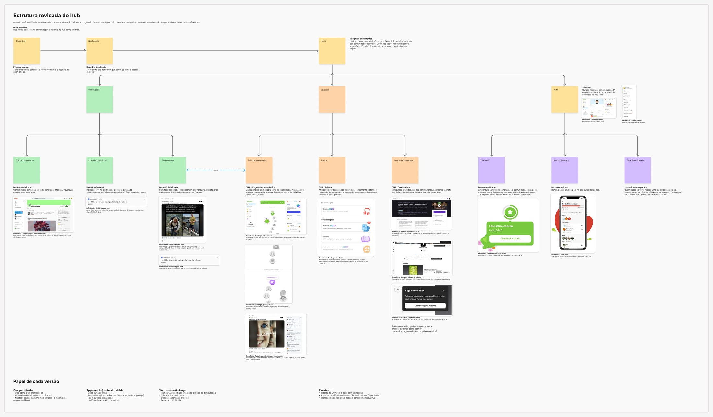
Estrutura revisada do hub, com o valor do DNA e a referência de cada área. Fonte: elaborado pelo autor (2026).
07 · A solução proposta
Relaçãocom o DNA
Todas as áreas convergem para a POTENCIALIZAÇÃO: o designer amplia o que já sabe, em vez de começar do zero.
Pilar
Vertentes
Onde aparece no hub
HOLÍSTICA
sistêmica e prática
Trilha e Praticar, com teoria aplicada na hora
ACESSIBILIDADE
personalizada e progressiva
Nivelamento e avanço em etapas
CONEXÃO
coletividade e profissional
Comunidade, minicursos e teste de proficiência
INOVAÇÃO
gamificado
XP, selos e cuidado estético
INOVAÇÃO
ousado
Na comunicação e no tom da campanha (capítulo 11)
07 · A solução proposta
Entrega emudanças
Escopo de entrega
Protótipo de alta fidelidade, navegável e em código, para celular e computador.
Identidade visual (capítulo 8).
Modelo de negócio (capítulo 10) e campanha de lançamento (capítulo 11).
Desde a primeira proposta
Saíram o pet e as moedas: deixavam o produto com cara infantil.
O progresso foi para o perfil; o vínculo, para a comunidade.
A regra de nunca punir a ausência ficou.
O aplicativo virou um hub com nome: BASE8.
07 · A solução proposta
08
Identidadevisual
Do polvo desenhado à mão à logo oficial do BASE8: paleta, tipografia, nome, logo, interface e brandbook.
Ponto de partida:o polvo
Desenhei uma logo e um mascote, um polvo de óculos, e entreguei o mesmo briefing a duas ferramentas, Claude Code e Codex, para reconstruí-los com rigor geométrico. O Codex foi mais fiel ao desenho; o Claude, mais claro no sistema.
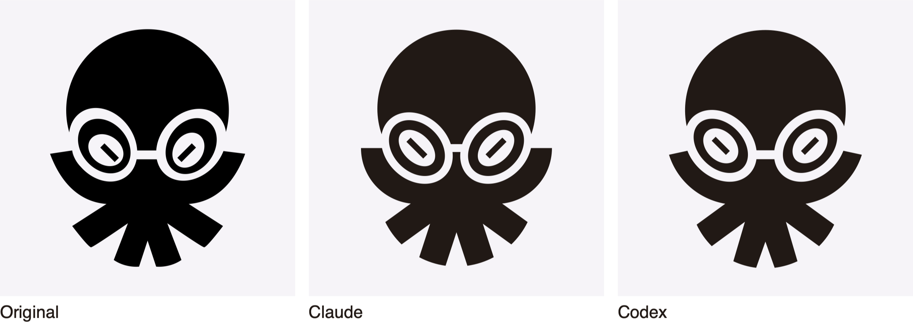
Logo original e reconstruções da primeira rodada (Claude Code e Codex).
08 · Identidade visual
Quatro rodadas,duas versões
A versão mais regrada ficou dura, e só a volta ao meu vetor resolveu. O rigor geométrico não substitui o olhar do designer.
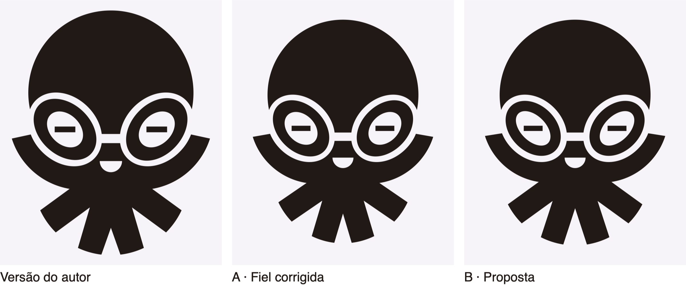
Quarta rodada: versão do autor, versão A (fiel corrigida) e versão B (proposta).
08 · Identidade visual
Mudança de rumo · outubro de 2026
A plataforma não tem personagem.
O pet deixava o produto infantil, e a interface de um produto profissional funciona melhor sem o polvo. Personagens podem aparecer na comunicação, mas não nas telas.
08 · Identidade visual
Painel semânticoe objetos
Cor saturada sobre branco, acúmulo de objetos e gesto humano. Uma ferramenta profissional com cara de objeto querido: o risógrafo deu origem à paleta.
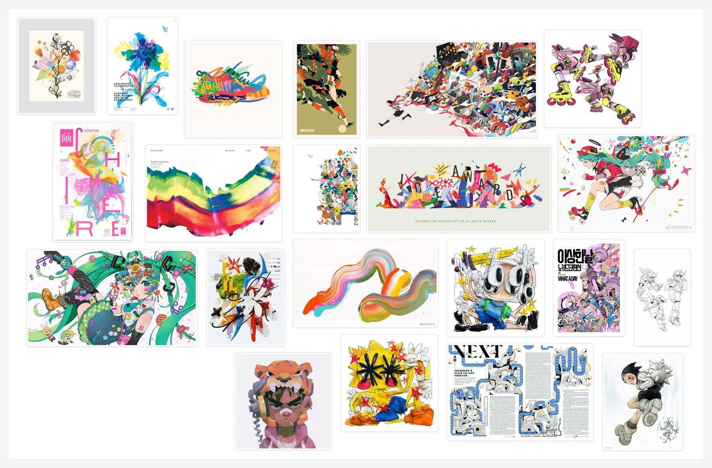
Painel semântico (imagens de terceiros reunidas como referência).
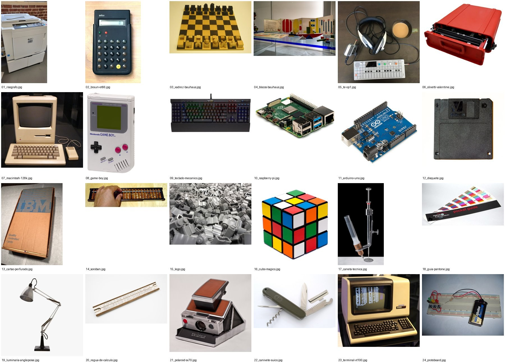
Objetos de referência: risógrafo, Braun ET66, OP-1, Game Boy, LEGO e outros.
08 · Identidade visual
Paleta derisografia
Tintas da risografia mais um verde-água, sobre branco puro. Cada cor tem um nome de marca e um papel fixo: uma área, uma cor.
Fundo das telas
Possibilidades Branco · #FFFFFF
Cor escura, ícones e logo
Descoberta Azul-noite · #1B1F3B
Home, botão principal e sucesso
Criatividade Verde-água · #12A180
Trilha e proficiência
Adaptação Limão · #F5EE4A
Atividades práticas
Ousadia Rosa flúor · #FF48B0
Comunidade e cursos
Conectividade Azul riso · #0B8FE0
Áreas e painéis
Técnica Cinza gelo · #F1F2F6
Legendas e apoio
Refinamento Cinza frio · #5A5E74
Texto branco sobre cor viva só em tamanho grande, e azul-noite sobre o limão. O verde-água foi escurecido para #12A180 e chegou a 3,3:1 com o branco.
08 · Identidade visual
Tipografiae nome
Instrument Sans nos títulos, no nome e nos números; Figtree no texto corrido. Duas famílias de uso livre.
BASE8, lido “base oito”
Base: o fundamento de design que o designer já tem e a base técnica que ganha.
8: as oito vertentes do DNA do projeto.
Base 8: o sistema octal, usado na computação.
Fechado em 23 de outubro de 2026, com busca inicial de marca sem conflito.
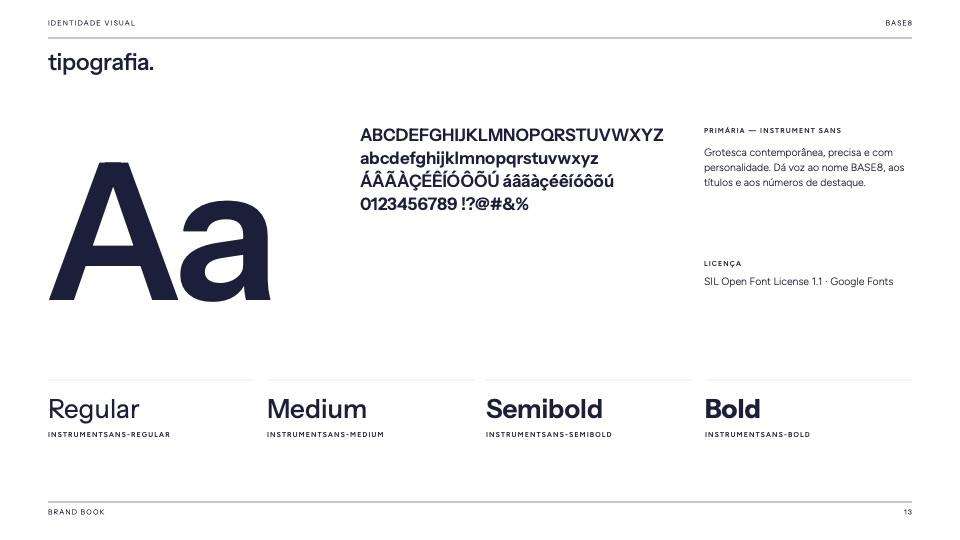
Prancha de tipografia do brandbook.
08 · Identidade visual
Logooficial
“BASE” em Instrument Sans Bold e uma bola 8 colorida, sobre um grid em que u é a espessura do traço: 34u × 9u, proteção de 3u e mínimo de 96 px. A versão reduzida é a bola 8 sozinha.
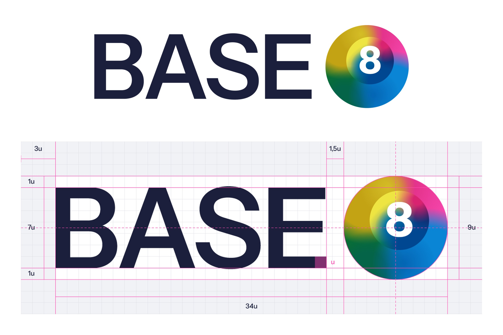
Versão principal e construção sobre o grid (24 nov. 2026).
08 · Identidade visual
Logoilustrada
Cada letra é montada com objetos de trabalho e de tecnologia: rascunho a lápis, pintura no Procreate e vetor feito com IA de código. Hoje é material de divulgação: os 31 objetos viraram padrões e ícones.
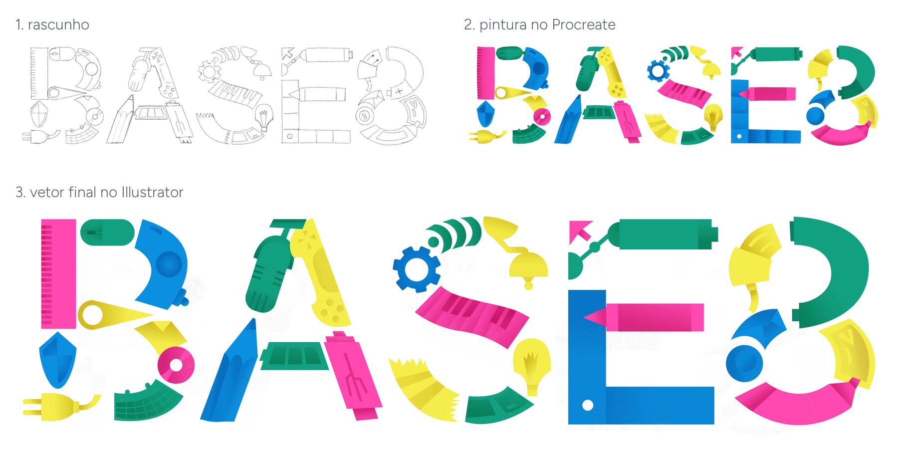
Rascunho, pintura e vetor final (23 nov. 2026).
08 · Identidade visual
Direção dainterface
Uma direção editorial sóbria: a primeira versão das telas ficou simples e divertida demais para um público profissional.
A tipografia carrega a hierarquia.
Linhas finas separam o conteúdo, no lugar de caixas.
Fundo branco; a cor é acento.
Gamificação sóbria: números grandes e finos, rótulos em caixa alta.
Ilustração em caracteres coloridos (arte ASCII), gerada por código.
Tema escuro com os mesmos papéis de cor.
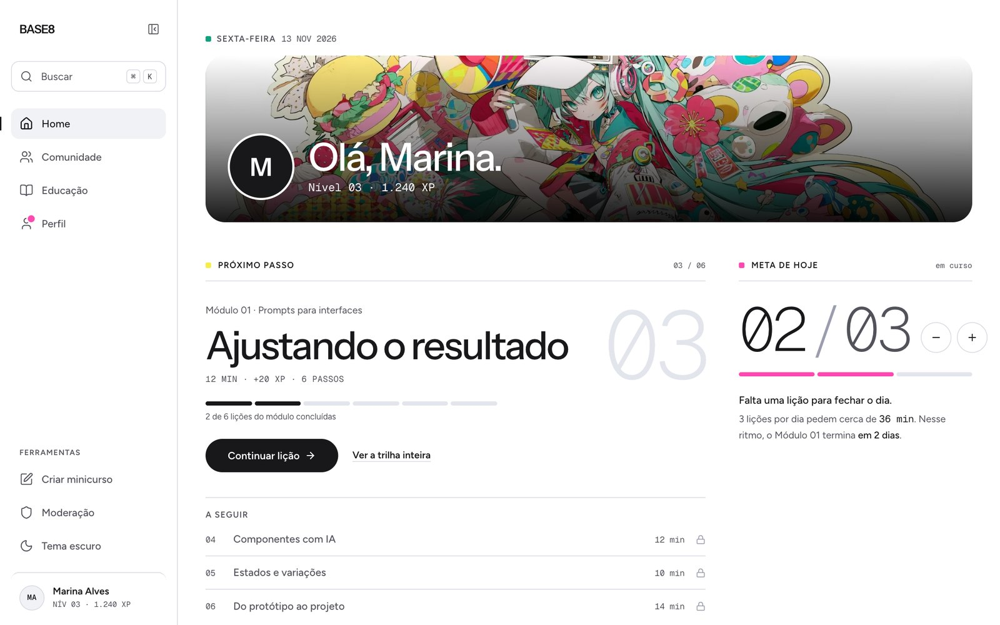
Home no computador.
08 · Identidade visual
Brandbook de32 pranchas
Essência, tom de voz, cores, contraste, tipografia, logo, ícones, ilustração, fotografia e aplicações. Gerado por scripts no Illustrator: quando uma regra muda, o documento inteiro se atualiza.
Capa
Cores
Aplicação das cores
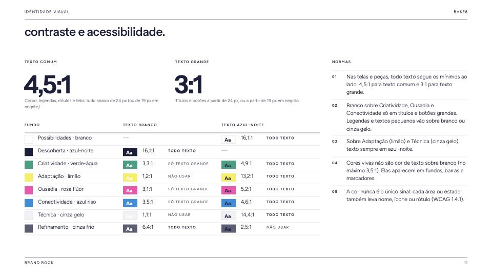
Contraste e acessibilidade
Áreas e cores
Tipografia
08 · Identidade visual
09
O protótipodo BASE8
Da estrutura às telas: a organização do hub, os fluxos principais, a versão para computador e o que o protótipo simula.
Organizaçãodo hub
31 telas de produto. No celular, uma barra inferior com quatro destinos; no computador, uma barra lateral.
Área
Telas
Função
Entrada
Entrar, cadastro, onboarding, consentimento e nivelamento
Receber e definir o ponto de partida
Home
Início
Mostrar o próximo passo e a meta do dia
Educação
Trilha, lição, checkpoint, praticar, cursos da comunidade e proficiência
Ensinar, exercitar e comprovar
Comunidade
Feed, tag, post, novo post e perfil de pessoa
Tirar dúvidas e trocar soluções
Perfil
Perfil, ranking, notificações e configurações
Acompanhar o progresso
Busca
Busca, com paleta de comandos
Achar qualquer conteúdo
Computador
Landing, criar minicurso e moderação
Apresentar, publicar e moderar
09 · O protótipo do BASE8
Entradae Home
O ponto de partida vem do desempenho, e não só da autoavaliação.
Onboarding com três perguntas: objetivo, área e uso de IA de código.
Consentimento por finalidade: trilha, notificações e e-mails.
Nivelamento com oito questões sobre situações reais; dá para responder “ainda não sei”.
Onboarding
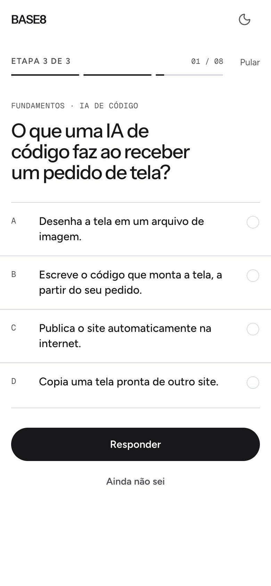
Nivelamento
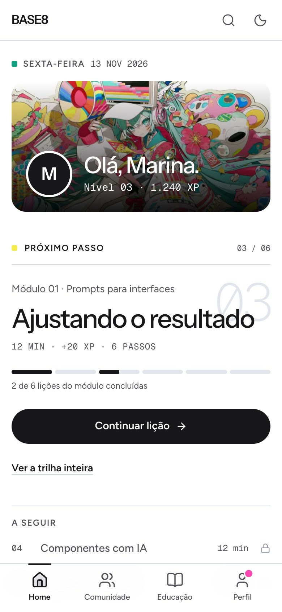
Home
09 · O protótipo do BASE8
Educaçãona prática
Lições curtas, de cerca de dez minutos, com prática na hora.
Leitura, antes e depois, pergunta de conferência e espaço para o próprio prompt.
Praticar: escrever um prompt, revisar um código ou fazer um projeto curto.
Parecer por critério, com comentário sobre o que melhorar.
Proficiência: dez questões, 70% de acerto e um selo no perfil.
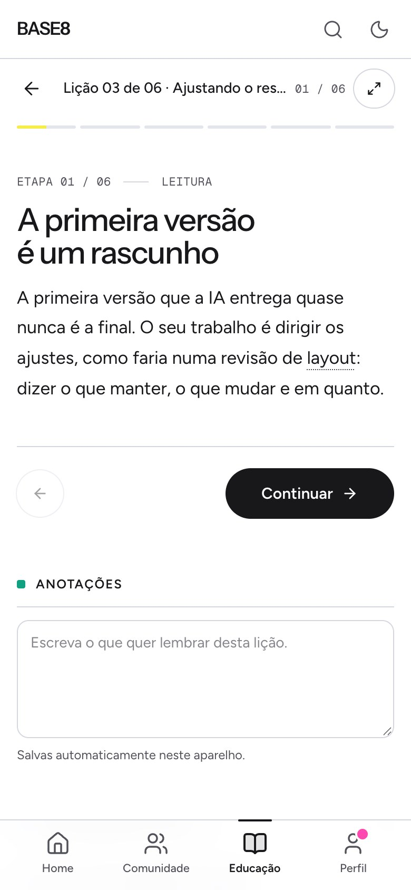
Lição
Laboratório
Resultado
09 · O protótipo do BASE8
Comunidadee perfil
Comunidade por tags, sem feed genérico, ligada às lições.
A resposta que resolveu rende XP a quem respondeu.
Posts ligados a uma lição aparecem nela como dúvidas da aula.
Perfil com nível, XP, sequência de dias, ranking entre amigos e selos.
Comunidade
Post
Perfil
09 · O protótipo do BASE8
Versão paracomputador
O celular é para o hábito diário; o computador, para sessões longas. Mesmo código, adaptado ao tamanho da tela.
Home
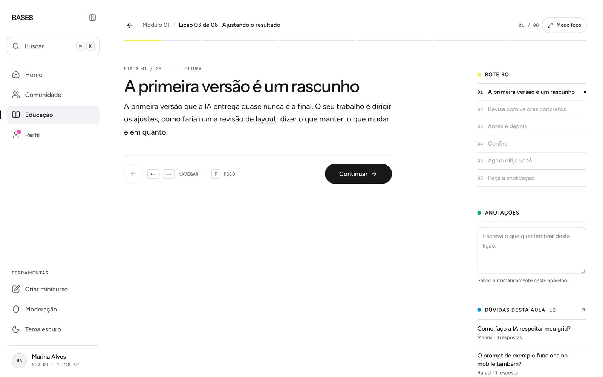
Lição
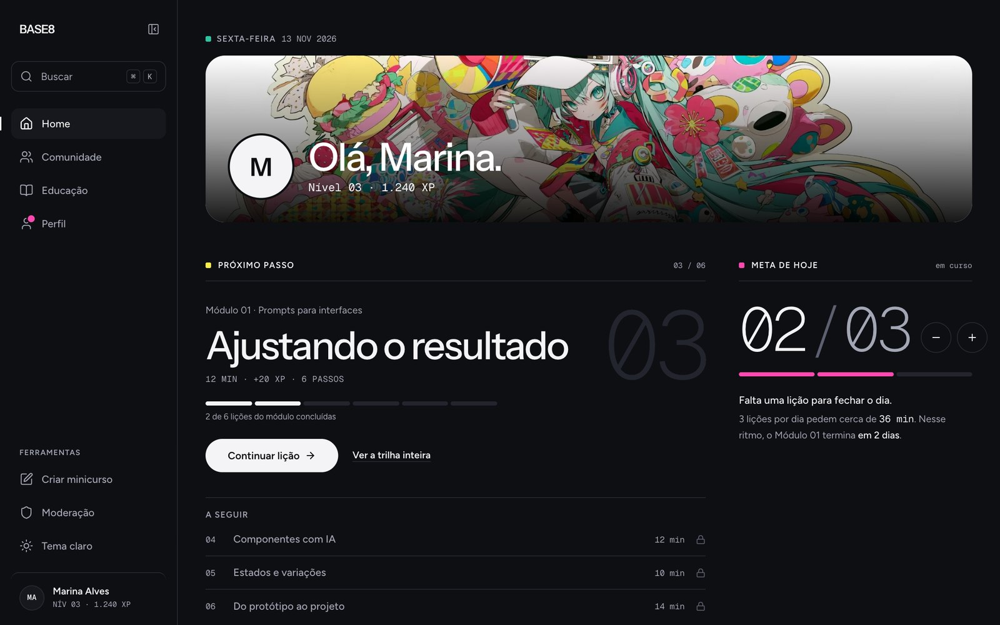
Tema escuro
Criar minicurso
Moderação
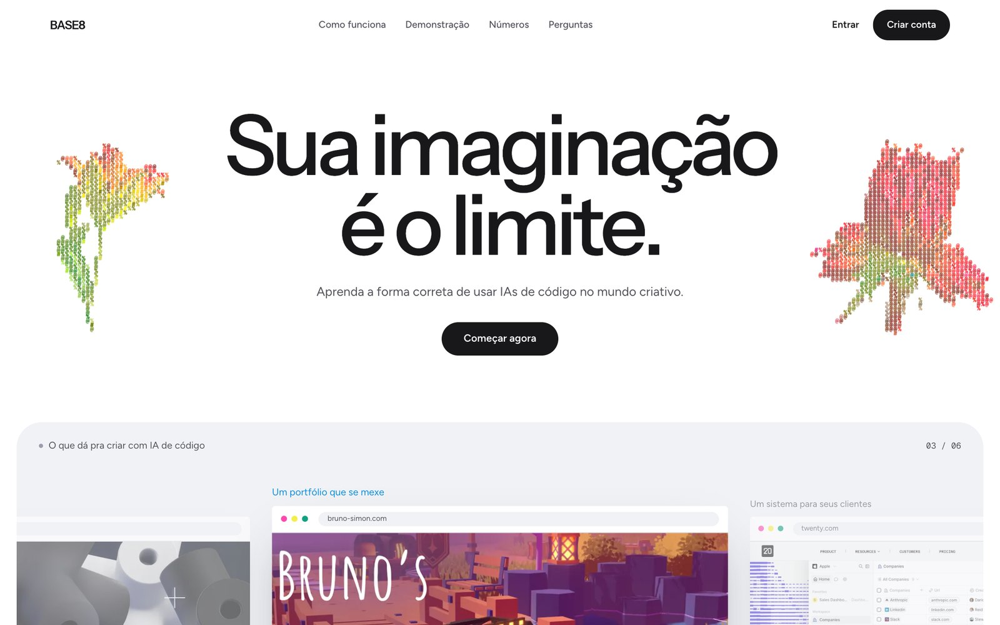
Landing
09 · O protótipo do BASE8
Protótipoe produto
Next.js, React, TypeScript, Tailwind e shadcn: 33 rotas e cerca de 29 mil linhas, escritas com IA de código sob a minha direção. O objetivo era provar a experiência, não a infraestrutura.
Parte
No protótipo
No produto final
Formulários
Validam e mostram os erros
Gravam os dados
Cadastro e login
Levam direto à Home
Autenticação real
Dados
Exemplos fixos, iguais para todos
Banco de dados por pessoa
Avaliação
Parecer de exemplo
Parecer gerado por IA a cada envio
Vídeo dos cursos
Espaço reservado
Player com os vídeos enviados
Uso das ferramentas de IA
Números fictícios
Dados das contas conectadas
Conteúdo da trilha
Três lições do primeiro módulo
Grade completa
Navegação e telas funcionam por completo. Um sistema de design único, com cores, espaços e fontes em variáveis, troca o tema claro pelo escuro sem redesenhar nada.
09 · O protótipo do BASE8
10
Viabilidade emodelo de negócio
Alternativas, mercado, receita, custos e uma projeção do primeiro ano em três cenários.
Alternativase preços
Um ano de plataforma de programação custa entre R$ 468 e R$ 659. Nenhuma alternativa parte do repertório do designer nem junta trilha, prática corrigida e comunidade.
Referência
Modelo
Preço
Limite para o designer
Rocketseat ONE
Assinatura anual de programação
R$ 659,10 à vista ou 6 × R$ 128,16, em promoção
Feita para quem quer ser desenvolvedor
Origamid
Assinatura de front-end e UI
R$ 468 por ano, ou a partir de R$ 39 por mês
Ensina a programar, não a dirigir a IA
Alura
Assinatura de 1 ou 2 anos
Exibido só no fechamento da compra
Sem recorte para o designer
Udemy
Curso avulso
Varia; o instrutor fica com 37% das vendas da plataforma
Organizada pelas funções da ferramenta
Hotmart
Venda de cursos de criadores
9,9% mais R$ 2,49 por venda
Não traz público nem comunidade
Conteúdo gratuito
Vídeos, documentação e fóruns
Sem custo
Disperso, sem ordem e sem correção
Preços consultados em novembro de 2026.
10 · Viabilidade e modelo de negócio
Mercadoe receita
O design tinha cerca de 103 mil profissionais no núcleo criativo formal em 2011. Mesmo no cenário otimista, 4 mil cadastros seriam menos de 4% disso: o limite é alcançar e converter.
Grátis
Comunidade, perfil, primeiras aulas da trilha e cursos gratuitos de criadores.
Porta de entrada aberta
R$ 297
Curso completo, pago uma vez: trilha inteira, atividades avaliadas e teste de proficiência.
Abaixo de um ano das assinaturas
20%
Comissão sobre os cursos pagos de criadores: acima da Hotmart, que não traz público, e bem abaixo da Udemy.
Valor de trabalho
Sem assinatura: ela obriga a publicar conteúdo novo todo mês, e o projeto entrega capacidade.
10 · Viabilidade e modelo de negócio
LeanCanvas
Problema
Falta um caminho de IA de código na língua do designer. Ele não sabe o que revisar no código gerado e teme perder prática.
Solução
Trilha curta com prática na hora, nivelamento por desempenho, comunidade por tags e teste de proficiência.
Métricas
Cadastros, conversão em compra, lições concluídas por semana e respostas úteis.
Proposta de valor
Entregar ao designer a parte técnica que falta e manter com ele a decisão de projeto e a validação do resultado.
Diferencial
Feito por designer, para designer. A comunidade atualiza o conteúdo no ritmo das ferramentas.
Canais
Campanha “Até onde?”, pôsteres e oficina na PUCPR e indicação na comunidade.
Público
Designers gráficos, digitais, de UX/UI e de produto que já tiveram algum contato com IA.
Custos
Infraestrutura (cerca de R$ 248 por mês), avaliação por IA, taxas de pagamento, impostos e campanha.
Receita
Curso completo com pagamento único (R$ 297) e comissão de 20% sobre os cursos pagos de criadores.
10 · Viabilidade e modelo de negócio
Projeção doprimeiro ano
Custos baixos: infraestrutura de cerca de R$ 248 por mês, avaliação por IA de cerca de R$ 0,04 por atividade, taxa de 4,98% e impostos de 6%. As conversões são premissas.
Linha
Pessimista
Base
Otimista
Cadastros no ano
500
1.500
4.000
Conversão em compra
2%
4%
6%
Vendas do curso completo
10
60
240
Receita do curso
R$ 2.970
R$ 17.820
R$ 71.280
Receita de comissão
R$ 0
R$ 1.164
R$ 5.820
Resultado do ano
−R$ 1.236
R$ 11.504
R$ 60.743
A partir do cenário base, o primeiro ano já fecha no positivo, com custos de operação baixos e sem investimento inicial alto.
10 · Viabilidade e modelo de negócio
Viabilidade legale síntese
Legal
Marca: busca inicial sem conflito.
Domínio: base8.com.br já pertence a terceiros.
Dados: LGPD, com consentimento por finalidade já no protótipo.
Terceiros: termos de uso e regras de moderação.
Formalização: CNPJ, nota e enquadramento com contador.
Síntese
Três escolhas: comunidade gratuita, compra única do curso e comissão sobre cursos de criadores.
Custos de operação baixos e risco financeiro pequeno no lançamento.
10 · Viabilidade e modelo de negócio
11
Plano de divulgação:“Até onde?”
A campanha de lançamento do BASE8: conceito, fases, canais, roteiros, orçamento e metas.
Conceito criativo
Até onde vai a sua imaginação?
Cada peça provoca no começo e vira no fim, devolvendo o protagonismo a quem cria: “a base você já tem. o resto a gente te ensina.”
11 · Plano de divulgação: “Até onde?”
Objetivose público
Objetivos
Tornar o BASE8 conhecido entre estudantes e profissionais de design de todo o Brasil, pelas redes.
Levar as pessoas à lista de espera, a principal medida de resultado.
Recolher ideias do público e transformá-las em conteúdo.
Público
Centro: designers e estudantes de design com pouco contato com IA de código.
Porta de entrada: criativos de áreas vizinhas, atraídos pela provocação.
A comunicação amplia o alcance sem mudar o foco.
Símbolo
No fim de cada vídeo, o 8 gira e deita e vira o sinal de infinito.
A base é o ponto de partida; o alcance não tem limite.
Em binário, 8 é 1000: “o oito que vale mil”.
11 · Plano de divulgação: “Até onde?”
Fases dacampanha
13 semanas contadas a partir do dia D. No teaser, pôsteres sem marca; no lançamento, um adesivo com o 8 deitado revela quem perguntou.
S-4 a S-3
Preparação
Perfis nas redes, página com lista de espera, manifesto e três episódios gravados, pôsteres impressos.
S-2 a S-1
Teaser
Pôsteres sem marca, com a pergunta e um QR; posts enigmáticos (8 = 1000).
S1 a S2
Lançamento
Adesivo revela a marca; manifesto e episódios 1 e 2; metade da verba de anúncios.
S3 a S8
Sustentação
Um episódio por semana e bastidores; oficina na S4; episódio 8 com uma ideia do público.
S9
Avaliação
Resultados contra as metas, o que funcionou e a próxima temporada.
11 · Plano de divulgação: “Até onde?”
Canais eformatos
Cada episódio rende várias peças: o mesmo vídeo vertical vai para Reels, TikTok e Shorts, e o processo vira carrossel de bastidores.
Canal
Papel
Frequência
Instagram
Vitrine visual e principal canal de cadastro
3 posts por semana e stories
TikTok
Alcance fora do círculo de quem já segue
3 a 4 vídeos por semana
YouTube
Shorts orgânicos e anúncios em vídeo
1 Short por semana
LinkedIn e Behance
Mostrar o processo a designers em atuação
1 post por semana (opcional)
Presencial
Curiosidade local e prova de que a ideia vira produto
Teaser, lançamento e S4
Tudo o que aparece nos vídeos é construído de verdade com IA de código, e os bastidores mostram esse processo.
11 · Plano de divulgação: “Até onde?”
Manifesto eoito episódios
O manifesto abre no dia D: um ponto desenhado à mão vira rabisco, site, livro e música, até o 8 deitar. Depois, oito episódios de 15 a 20 s, um por semana, em quatro tempos: gancho, transformação, virada e fecho.
Ep. 1
Rabisco → site
“…ou um site que ainda não aprendeu a rodar.”
Ep. 2
Frase → livro
“a próxima pode ser de código.”
Ep. 3
Batida → música
“era um app.” A batida vira um sequenciador web.
Ep. 4
Cor → imagem
“mil imagens.” Pôsteres gerados por código.
Ep. 5
Foto → vídeo
“agora ela quer.” Efeito de caracteres do BASE8.
Ep. 6
Lista → sistema
“só faltava virar sistema.”
Ep. 7
Ideia → software
“você pode ser quem faz.”
Ep. 8
Sua ideia → ∞
Uma ideia enviada pelo público vira produto.
Fecho dos episódios 1 a 7: “aprenda a tirar suas ideias do papel.”
11 · Plano de divulgação: “Até onde?”
Orçamentoe metas
A produção visual, a edição e a trilha são minhas: o gasto se limita a impressão, domínio e anúncios.
Item
Enxuto
Recom.
Ampliado
Impressos
R$ 260
R$ 640
R$ 970
Domínio .com.br
R$ 40
R$ 40
R$ 40
Anúncios Instagram
R$ 300
R$ 600
R$ 1.200
Anúncios TikTok
R$ 150
R$ 300
R$ 700
Anúncios YouTube
R$ 0
R$ 300
R$ 600
Oficina
R$ 0
R$ 100
R$ 150
Total
R$ 750
R$ 1.980
R$ 3.660
Momento
Meta inicial
Teaser
150 respostas a “o que você queria criar?”
Lançamento
30 mil visualizações nos canais de vídeo
Fim da S8
500 cadastros na lista de espera
Tráfego pago
Até R$ 4 por cadastro
Engajamento
Salvamentos e compartilhamentos acima das curtidas
Oficina (S4)
20 participantes
11 · Plano de divulgação: “Até onde?”
Ações presenciaise produção
A pergunta vai para a parede: três pôsteres A3 e um mural A2, com QR, na PUCPR e em espaços criativos, sempre com permissão.
Flyers A6 e adesivos redondos com o 8 deitado.
Oficina “Até onde?” na S4: cada pessoa traz um rabisco e sai com uma página funcionando.
Produção: manifesto (34 s) e vídeo de divulgação (cerca de 1 min), montados em código, com trilha no Ableton Live.
Cartazes e story aplicados em mockups.
11 · Plano de divulgação: “Até onde?”
12
Processo de projetocom IA de código
Este projeto foi feito como a pergunta propõe. Registro como dividi o trabalho, o que deu certo, o que deu errado e o que dependeu de mim.
Designer× IA
A ferramenta assume a parte técnica; a decisão e a validação ficam comigo.
Etapa
O que eu fiz
O que a IA fez
Pesquisa e relatório
Defini os eixos, o recorte e revisei
Buscou fontes e redigiu rascunhos
Estrutura do hub
Decidi áreas, regras e referências
Montou o mapa e as ligações
Wireframes e telas
Defini a hierarquia e escolhi versões
Gerou os modelos das 32 telas
Identidade visual
Desenhei, escolhi e ajustei à mão
Mediu, construiu a geometria e os scripts
Protótipo
Escrevi a direção e revisei cada tela
Escreveu o código e as verificações
Divulgação
Defini conceito, público e tom
Estruturou o plano e montou os vídeos
12 · Processo de projeto com IA de código
Linhado tempo
Mês
Fase
Marcos
Agosto
Discover
Pesquisa exploratória, público, entrevista E1, questionário, primeiros testes
Setembro
Define
Pergunta projetual, DNA, benchmarking de estratégias, primeira proposta
Outubro
Develop
Logo, saída do pet, paleta, 32 telas, primeiro protótipo, nome BASE8
Novembro
Develop
Landing, plano de divulgação, revisão das telas, logo oficial, campanha
12 · Processo de projeto com IA de código
O que oprocesso mostrou
Posso, quando há briefing claro, quando julgo com olho de designer e quando reconheço o que não sei revisar.
Onde a IA ajudou
Alcance: sem ser programador, entreguei um protótipo navegável.
Expertise: contraste, acessibilidade e estrutura de código.
Velocidade: escolher olhando, e não imaginando.
Onde falhou
Decidiu lacunas sem avisar.
Tendeu ao genérico e ao certinho.
Agiu sem medir a consequência e errou o tom.
O que dependeu de mim
As decisões de projeto.
O julgamento estético.
A validação, e buscar fora a revisão que não sei fazer.
12 · Processo de projeto com IA de código
13
Consideraçõesfinais
O que o projeto entrega e a resposta à pergunta projetual.
O que o projetoentrega
Descobrir
Pesquisa
Levantamento exploratório, público-alvo, entrevista, questionário e pesquisa com designers.
Definir
Pergunta e DNA
Pergunta projetual e DNA de marca: potencialização, com quatro pilares e oito vertentes.
Desenvolver
Benchmarking
Estratégias de mercado traduzidas em princípios para cada valor do DNA.
Entregar
Protótipo BASE8
Hub navegável em código, no celular e no computador, construído com IA de código.
Entregar
Identidade visual
Nome, logo oficial, logo ilustrada, paleta, tipografia e brandbook de 32 pranchas.
Entregar
Negócio e campanha
Modelo de negócio com projeção em três cenários e a campanha de lançamento “Até onde?”.
13 · Considerações finais
A respostaà pergunta
A resposta veio em duas frentes: o hub que projetei e o processo com que o construí.
O BASE8: trilha com a base comum das ferramentas, prática ligada ao trabalho real, comunidade e perfil de progresso.
O processo: sem ser programador, entreguei um protótipo navegável, uma identidade aplicada por scripts e um relatório com apoio de IA de código.
Três condições: briefing claro, julgamento de designer em cada rodada e reconhecer o que eu não sei revisar.
São essas condições que o BASE8 se propõe a ensinar.
13 · Considerações finais
Considerações finais
A IA de código amplia o alcance do designer quando ele continua no papel de quem decide.
A IA ampliou o alcance e a velocidade do trabalho. As decisões de projeto, o julgamento estético e a validação continuaram com o designer.
ADOBE. The side hustle design report for non-designers. Disponível em: https://www.adobe.com/express/learn/blog/diy-branding-design-report. Acesso em: 19 ago. 2026.
ADOBE NEWS. 87 Percent of Creators Say Creative AI Is Growing Their Business and Audience, According to Adobe's 2026 Creators' Toolkit Report. Disponível em: https://news.adobe.com/news/2026/06/creators-toolkit-report-2026. Acesso em: 19 ago. 2026.
AGÊNCIA SEBRAE DE NOTÍCIAS. Jovens brasileiros estão empreendendo mais e registram remuneração recorde. Disponível em: https://agenciasebrae.com.br/dados/jovens-brasileiros-estao-empreendendo-mais-e-registram-remuneracao-recorde/. Acesso em: 19 ago. 2026.
AIRBNB. What's required to be a Superhost. Airbnb Help Center. Disponível em: https://www.airbnb.com/help/article/829. Acesso em: 25 set. 2026.
ALCOHOLICS ANONYMOUS WORLD SERVICES. Questions & answers on sponsorship (P-15). Disponível em: https://www.aa.org/sites/default/files/literature/P-15_0625.pdf. Acesso em: 25 set. 2026.
ALMEIDA, M.; OLIVEIRA, L. P.; REGO, R. C. A. A importância do Programa de Atletas de Alto Rendimento (PAAR) das Forças Armadas para o desempenho de atletas brasileiros: um estudo transversal. Revista de Educação Física, v. 90, n. 2, 2021. Disponível em: https://revistadeeducacaofisica.emnuvens.com.br/revista/article/view/2765. Acesso em: 18 set. 2026.
ALURA. 9 oportunidades de crescimento para designers em 2026. Disponível em: https://www.alura.com.br/artigos/profissoes-para-designer-conheca-9-oportunidades-em-crescimento. Acesso em: 19 ago. 2026.
ANKI. What spaced repetition algorithm does Anki use? Anki FAQs. Disponível em: https://faqs.ankiweb.net/what-spaced-repetition-algorithm. Acesso em: 25 set. 2026.
ANTHROPIC. Anthropic Economic Index report, setembro de 2025. Disponível em: https://www.anthropic.com/research/anthropic-economic-index-september-2025-report. Acesso em: 13 ago. 2026.
ANTHROPIC. Case Study — How Anthropic teams use Claude Code. Disponível em: https://www.anthropic.com/news/how-anthropic-teams-use-claude-code. Acesso em: 10 ago. 2026.
ANTHROPIC. How Claude Code is used in practice. Disponível em: https://www.anthropic.com/research/claude-code-expertise. Acesso em: 10 ago. 2026.
ANTHROPIC. Try Claude — Canva Case Study. Disponível em: https://www.anthropic.com/customers/canva. Acesso em: 10 ago. 2026.
ANTHROPIC. Using Claude Design for prototypes and UX. Disponível em: https://claude.com/resources/tutorials/using-claude-design-for-prototypes-and-ux. Acesso em: 10 ago. 2026.
ARXIV:2302.06590. The impact of AI on developer productivity: evidence from GitHub Copilot. Disponível em: https://arxiv.org/abs/2302.06590. Acesso em: 13 ago. 2026.
ASSOCIATION FOR ACADEMIC SURGERY. How Halsted altered the course of surgery as we know it. Disponível em: https://www.aasurg.org/how-halsted-altered-the-course-of-surgery-as-we-know-it/. Acesso em: 25 set. 2026.
AUGMENT CODE. AI Code Comparison: GitHub Copilot vs Cursor vs Claude Code. Disponível em: https://www.augmentcode.com/tools/ai-code-comparison-github-copilot-vs-cursor-vs-claude-code. Acesso em: 10 ago. 2026.
BANANI. AI Design-to-Code Tools: The Complete Guide for 2026. Disponível em: https://www.banani.co/blog/ai-design-to-code-tools. Acesso em: 10 ago. 2026.
BAUHAUS-ARCHIV / MUSEUM FÜR GESTALTUNG. Preliminary course, workshops and Bauhaus diploma. Berlim. Disponível em: https://www.bauhaus.de/en/discover/article/preliminary-course-workshops-and-bauhaus-diploma/. Acesso em: 25 set. 2026.
BEEMINDER. What is Beeminder? Beeminder Help. Disponível em: https://help.beeminder.com/article/70-what-is-beeminder. Acesso em: 25 set. 2026.
BICKNELL, K.; BRUST, C. Learning how to help you learn: introducing Birdbrain. Duolingo Blog, 7 out. 2020. Disponível em: https://blog.duolingo.com/learning-how-to-help-you-learn-introducing-birdbrain. Acesso em: 18 set. 2026.
BRASIL 61. Dólar hoje fecha em leve alta, a R$ 5,51, após oscilar entre queda e valorização. 9 nov. 2026. Disponível em: https://brasil61.com/n/dolar-hoje-fecha-em-leve-alta-a-r-5-51-apos-oscilar-entre-queda-e-valorizacao-bras2617447. Acesso em: 12 nov. 2026.
BRASIL. Lei Complementar nº 123, de 14 de dezembro de 2006. Institui o Estatuto Nacional da Microempresa e da Empresa de Pequeno Porte. Brasília, DF: Presidência da República, 2006.
BRASIL. Lei nº 13.709, de 14 de agosto de 2018. Lei Geral de Proteção de Dados Pessoais (LGPD). Brasília, DF: Presidência da República, 2018.
BRAYBROOK, R. Everything you need to know about the pitwall in F1: who sits there and what does it do? Autosport, 19 mar. 2024. Disponível em: https://www.autosport.com/f1/news/everything-you-need-to-know-about-the-pitwall-in-f1-who-sits-there-and-what-does-it-do/10588720/. Acesso em: 25 set. 2026.
BROOKE, J. SUS: a “quick and dirty” usability scale. In: JORDAN, P. W. et al. (ed.). Usability evaluation in industry. London: Taylor & Francis, 1996. p. 189-194.
BUILDER.IO. Claude Code for Designers. Disponível em: https://www.builder.io/blog/claude-code-for-designers. Acesso em: 10 ago. 2026.
BUILT IN. Claude Code vs. Codex vs. Cursor vs. GitHub Copilot. Disponível em: https://builtin.com/articles/claude-code-codex-cursor-github-copilot-comparison. Acesso em: 10 ago. 2026.
CETIC.BR. Uso de Inteligência Artificial por empresas brasileiras avança e atinge 17%. Disponível em: https://cgi.br/noticia/releases. Acesso em: 13 ago. 2026.
CHATTERJEE, A. From Prompt to Production: A Designer's Step-by-Step Workflow with Claude Design + Claude Code. Design Systems Collective. Disponível em: https://www.designsystemscollective.com/from-prompt-to-production-a-designers-step-by-step-workflow-with-claude-design-claude-code-a7705daad026. Acesso em: 10 ago. 2026.
CHRISTENSEN, B. T.; ARENDT, K. M.; McELHERON, P.; BALL, L. J. The design entrepreneur: how adaptive cognition and formal design training create entrepreneurial self-efficacy and entrepreneurial intention. Design Studies, v. 86, 2023. Disponível em: https://www.sciencedirect.com/science/article/pii/S0142694X23000224. Acesso em: 19 ago. 2026.
DEEL. Geração Z no mercado de trabalho: características e desafios. Disponível em: https://www.deel.com/pt/blog/caracteristicas-geracao-z-trabalho/. Acesso em: 19 ago. 2026.
DELOITTE. Deloitte Global Gen Z and Millennial Survey 2026. Disponível em: https://www.deloitte.com/global/en/issues/work/genz-millennial-survey.html. Acesso em: 19 ago. 2026.
DESIGN COUNCIL. History of the Double Diamond. Disponível em: https://www.designcouncil.org.uk/resources/the-double-diamond/history-of-the-double-diamond/. Acesso em: 10 ago. 2026.
DESIGNER FUND. AI in Design Report 2026. Disponível em: https://designerfund.com/blog/ai-in-design-2026. Acesso em: 26 ago. 2026.
DIGITALAPPLIED. AI Coding Adoption 2026: 50 Statistics From 7 Surveys. Disponível em: https://www.digitalapplied.com/blog/ai-coding-adoption-statistics-2026-50-data-points. Acesso em: 10 ago. 2026.
DUOLINGO. New Duolingo home screen design. Duolingo Blog. Disponível em: https://blog.duolingo.com/new-duolingo-home-screen-design. Acesso em: 18 set. 2026.
FEDERAL RESERVE BANK OF ST. LOUIS. The impact of generative AI on work productivity. Disponível em: https://www.stlouisfed.org/on-the-economy/2025/feb. Acesso em: 13 ago. 2026.
FGV IBRE. Inteligência Artificial avança entre empresas brasileiras, mas uso expõe desafios. Disponível em: https://blogdoibre.fgv.br. Acesso em: 13 ago. 2026.
FIGMA. 7 of the Best AI App Builders for 2026. Disponível em: https://www.figma.com/resource-library/ai-app-builders/. Acesso em: 10 ago. 2026.
FIGMA. Design Operations: What It Is and Why It Matters. Disponível em: https://www.figma.com/resource-library/design-operations/. Acesso em: 10 ago. 2026.
FIRJAN. Mapeamento da Indústria Criativa 2025. Rio de Janeiro: Firjan, 2025. Disponível em: https://www.firjan.com.br/noticias/mapeamento-da-industria-criativa-2025-8AE4828D96AAF437019783E8CFE02F31-00.htm. Acesso em: 12 nov. 2026.
FLATIRON SCHOOL. Do UX/UI Designers Code? Or Can You Get Away Without It?. Disponível em: https://flatironschool.com/blog/do-ux-ui-designers-code/. Acesso em: 10 ago. 2026.
FOCUSMATE. How it works. Disponível em: https://www.focusmate.com/how-it-works/. Acesso em: 25 set. 2026.
FORBES. Roughly 10% of enterprise functions use AI agents, McKinsey finds. Disponível em: https://www.forbes.com/sites/josipamajic. Acesso em: 13 ago. 2026.
FROG / CAPGEMINI INVENT. DesignOps 101 | What is Design Operations?. Disponível em: https://www.frog.co/designmind/designops101. Acesso em: 10 ago. 2026.
GARTNER. Gartner predicts over 40% of agentic AI projects will be canceled by end of 2027. Disponível em: https://www.gartner.com/en/newsroom/press-releases. Acesso em: 13 ago. 2026.
Referências
Referências(continuação)
GELLES, D. The secret history of “Don't buy this jacket”. David Gelles Substack. Disponível em: https://davidgelles.substack.com/p/the-secret-history-of-dont-buy-this. Acesso em: 25 set. 2026.
GITHUB BLOG. Research: quantifying GitHub Copilot's impact on developer productivity and happiness. Disponível em: https://github.blog/news-insights/research. Acesso em: 13 ago. 2026.
GOGGIN, B. Duolingo's redesign has some fans up in arms. Its CEO says it's not turning back. NBC News, 25 ago. 2022. Disponível em: https://www.nbcnews.com/tech/tech-news/duolingos-update-redesign-luis-von-ahn-interview-rcna44655. Acesso em: 18 set. 2026.
GOLDMAN SACHS. Survey: Small Businesses Embrace AI — But Need Training and Support to Fully Harness It. Disponível em: https://www.goldmansachs.com/pressroom/press-releases/2026/small-businesses-embrace-ai-but-need-training-and-support-to-fully-harness-it. Acesso em: 26 ago. 2026.
HAYNES, A. B. et al. A surgical safety checklist to reduce morbidity and mortality in a global population. New England Journal of Medicine, v. 360, n. 5, p. 491-499, 2009. DOI: 10.1056/NEJMsa0810119.
IKEA. Why are there only photos in IKEA assembly instructions? IKEA Customer Service. Disponível em: https://www.ikea.com/us/en/customer-service/knowledge/articles/f050cged-d77f-477b-8d60-ge5d56b88d2e.html. Acesso em: 25 set. 2026.
INDEXBOX. AI Workforce Impact in 2025: 54,000 Jobs Lost, 280,000 Created. Disponível em: https://indexbox.io/blog. Acesso em: 13 ago. 2026.
INTERACTION DESIGN FOUNDATION (IXDF). Should UX Designers Learn to Code?. Disponível em: https://ixdf.org/literature/article/should-ux-designers-learn-to-code. Acesso em: 10 ago. 2026.
INTERNATIONAL AI SAFETY REPORT. International AI Safety Report 2026. Disponível em: https://arxiv.org/pdf/2602.21012. Acesso em: 13 ago. 2026.
JORNAL SPASSO CIDADES. Mercado de design cresce 8% ao ano e deve faturar R$ 22,5 bilhões em 2025. Disponível em: https://jornalspassocidades.com.br/mercado-de-design-cresce-8-ao-ano-e-deve-faturar-r-225-bilhoes-em-2025/. Acesso em: 19 ago. 2026.
JWAVE. Abrin 2026 mostra como tecnologia, inclusão e nostalgia impulsionam o crescimento do mercado de brinquedos. Disponível em: https://www.jwave.com.br/2026/03/abrin-2026-mostra-como-tecnologia-inclusao-e-nostalgia-impulsionam-o-crescimento-do-mercado-de-brinquedos/. Acesso em: 19 ago. 2026.
KERR, C. How Miyamoto built Super Mario Bros.' legendary World 1-1. Game Developer, 8 set. 2015. Disponível em: https://www.gamedeveloper.com/design/how-miyamoto-built-i-super-mario-bros-i-legendary-world-1-1. Acesso em: 25 set. 2026.
KIM, W. C.; MAUBORGNE, R. Nintendo Wii: video gaming case study. Blue Ocean Strategy. Disponível em: https://www.blueoceanstrategy.com/teaching-materials/nintendo-wii/. Acesso em: 25 set. 2026.
KLARNA. Casos e dados de 2024–2025. Casos e dados consolidados a partir de cobertura jornalística: CX Dive, AI Business, Twig e Factr.
LONDON MUSEUM. How Harry Beck revolutionised the Tube map. Disponível em: https://www.londonmuseum.org.uk/collections/london-stories/harry-beck-revolutionised-tube-map/. Acesso em: 25 set. 2026.
MARKTECHPOST. Best 21 Low-Code and No-Code AI Tools in 2026. Disponível em: https://www.marktechpost.com/2026/06/07/best-21-low-code-and-no-code-ai-tools-in-2026/. Acesso em: 10 ago. 2026.
MARKTECHPOST. Claude Code Guide 2026: 25 Features with Examples + Demo. Disponível em: https://www.marktechpost.com/2026/06/14/claude-code-guide-2026-25-features-with-examples-demo/. Acesso em: 10 ago. 2026.
MCKINSEY & COMPANY. The state of AI in 2025: agents, innovation, and transformation. Disponível em: https://www.mckinsey.com/capabilities/quantumblack/our-insights/the-state-of-ai. Acesso em: 13 ago. 2026.
MENLO VENTURES. 2025: the state of generative AI in the enterprise. Disponível em: https://www.menlovc.com/perspective. Acesso em: 13 ago. 2026.
MERCADO PAGO. Link de pagamento: taxas. Disponível em: https://www.mercadopago.com.br/ferramentas-para-vender/link-de-pagamento. Acesso em: 12 nov. 2026.
MINISTÉRIO DA DEFESA. Conheça o PAAR. Disponível em: https://www.gov.br/defesa/pt-br/assuntos/esporte/olimpiadas/conheca-o-paar-1. Acesso em: 18 set. 2026.
MINISTÉRIO DA DEFESA. Programa de Incorporação de Atletas de Alto Rendimento (PAAR). Comissão Desportiva Militar do Brasil. Disponível em: https://www.gov.br/defesa/pt-br/assuntos/esporte/departamento-de-desporto-militar-ddm/comissao-desportiva-militar-do-brasil/paar. Acesso em: 18 set. 2026.
MIT (NANDA / MEDIA LAB). The GenAI Divide: State of AI in Business 2025. Relatório citado via Fortune, Forbes e legal.io, jul.-ago. 2025.
MOUTS TI. Design inclusivo e neurodivergência: a fronteira que o mercado brasileiro ainda ignora. Disponível em: https://mouts.info/design-inclusivo-e-neurodivergencia-a-fronteira-que-o-mercado-brasileiro-ainda-ignora. Acesso em: 19 ago. 2026.
NAND2TETRIS. From Nand to Tetris: building a modern computer from first principles. Disponível em: https://www.nand2tetris.org/. Acesso em: 25 set. 2026.
NIELSEN, J. Why you only need to test with 5 users. Nielsen Norman Group, 2000. Disponível em: https://www.nngroup.com/articles/why-you-only-need-to-test-with-5-users/. Acesso em: 12 nov. 2026.
NIELSEN NORMAN GROUP (NN/G). From Confrontation to Collaboration: The Developer-Designer Relationship. Disponível em: https://www.nngroup.com/articles/developer-designer-relationship/. Acesso em: 10 ago. 2026.
NU HOLDINGS. Nubank comemora dez anos e abre o escritório para evento com imprensa e influenciadores. Sala de Imprensa Nu, 2023. Disponível em: https://nu.com/pt/sala-de-imprensa/companhia/nubank-comemora-dez-anos-e-abre-o-escritorio-para-evento-com-imprensa-e-influenciadores. Acesso em: 25 set. 2026.
NUKOE. Guia Gen Z para Millennials: entenda a linguagem no trabalho. Disponível em: https://www.nukoe.com/blog/pt-decifrar-a-linguagem-da-geracao-z-guia-pratico-para-millennials-no-ambiente-profissional-mo87vfi1. Acesso em: 19 ago. 2026.
NUNES, J. C.; DRÈZE, X. The endowed progress effect: how artificial advancement increases effort. Journal of Consumer Research, v. 32, n. 4, p. 504-512, mar. 2006. DOI: 10.1086/500480.
PONTIFÍCIA UNIVERSIDADE CATÓLICA DO PARANÁ. Eixo Humanístico. Escola de Educação e Humanidades. Disponível em: https://www.pucpr.br/escola-de-educacao-e-humanidades/destaques/eixo-humanistico/. Acesso em: 25 set. 2026.
PONTIFÍCIA UNIVERSIDADE CATÓLICA DO PARANÁ. #NaPUCPRTem: saiba mais sobre a Formação “Gente Boa” na Universidade. Curitiba, 24 jun. 2021. Disponível em: https://www.pucpr.br/noticias/destaque/napucprtem-saiba-mais-sobre-formacao-gente-boa-na-universidade/. Acesso em: 25 set. 2026.
PONTIFÍCIA UNIVERSIDADE CATÓLICA DO PARANÁ. Território de Marca: guia da marca PUCPR. v. 1.0. Curitiba: PUCPR, 2020. Disponível em: https://hotmilk.pucpr.br/wp-content/uploads/2022/08/guide-marca-pucpr.pdf. Acesso em: 16 set. 2026.
POPE, A.; KHANDELWAL, A. Maximizing outputs with v0: from UI generation to code creation. Vercel Blog, 23 out. 2024. Disponível em: https://vercel.com/blog/maximizing-outputs-with-v0-from-ui-generation-to-code-creation. Acesso em: 25 set. 2026.
SAURO, J. Measuring usability with the System Usability Scale (SUS). MeasuringU, 2011. Disponível em: https://measuringu.com/sus/. Acesso em: 12 nov. 2026.
SEBRAE. Empreendedorismo Jovem Sob a Ótica da PNAD Contínua — 4º trimestre 2024. Disponível em: https://api.pr.sebrae.com.br/storage/comunidade/anexos/30000/PUB_Empreendedorismo%20Jovem%20no%20Brasil%20-%204%C2%B0%20Trimestre%202024.pdf. Acesso em: 19 ago. 2026.
SILVERSTEIN, E. Refraction 101: go forth and refract. American Academy of Ophthalmology, 12 jun. 2019. Disponível em: https://www.aao.org/young-ophthalmologists/yo-info/article/refraction-101-go-forth-and-refract. Acesso em: 25 set. 2026.
SINGER, R. Shape Up: stop running in circles and ship work that matters. Basecamp. Disponível em: https://basecamp.com/shapeup. Acesso em: 25 set. 2026.
SOLANKI, D. B. I Tried “Claude Code” for UI/UX Designing Project. Insane Results!!. Disponível em: https://medium.com/@dollyborade07/i-tried-claude-code-for-ui-ux-designing-project-insane-results-dd4e1bb1bfec. Acesso em: 10 ago. 2026.
Referências
Referências(continuação)
SOUZA, Túlio Castro de. Design Centrado no Ser Humano e Inteligência Artificial generativa: construção de um artefato focado em viagens a lazer no setor de turismo brasileiro. 2025. Dissertação (Mestrado Profissional em Empreendedorismo) – Faculdade de Economia, Administração e Contabilidade, Universidade de São Paulo, São Paulo, 2025.
STITCH FIX. 10 billion interactions (and counting!) on Style Shuffle: the data powering your personalized shopping experience. Stitch Fix Newsroom, 3 ago. 2022. Disponível em: https://newsroom.stitchfix.com/blog/10-billion-interactions-and-counting-on-style-shuffle-the-data-powering-your-personalized-shopping-experience/. Acesso em: 25 set. 2026.
UX COLLECTIVE. Building AI-driven workflows powered by Claude Code and other tools. Disponível em: https://uxdesign.cc/designing-with-claude-code-and-codex-cli-building-ai-driven-workflows-powered-by-code-connect-ui-f10c136ec11f. Acesso em: 10 ago. 2026.
UX DESIGN INSTITUTE. The UX Job Market in 2026: The Most In-Demand Skills & Roles. Disponível em: https://www.uxdesigninstitute.com/blog/the-ux-job-market-in-2026-2/. Acesso em: 19 ago. 2026.
WHITELEY, T. How to structure your approach to Product Management: a double diamond view. The Agile Mindset (Medium). Disponível em: https://medium.com/the-agile-mindset/how-to-structure-your-approach-to-product-management-a-double-diamond-view-b386658038ca. Acesso em: 10 ago. 2026.
WORLD ECONOMIC FORUM. Future of Jobs Report 2025. Dados citados via aimultiple.com e indexbox.io.
ZAKRYZHEVSKYY, M.; LESHER, B. Dear Duolingo: how can I keep my streak while on vacation? Duolingo Blog, 18 abr. 2023. Disponível em: https://blog.duolingo.com/how-to-keep-your-streak-on-vacation. Acesso em: 18 set. 2026.
ZEKA DESIGN. Top 11 Design Careers: In-Demand Creative Roles in 2026. Disponível em: https://www.zekagraphic.com/top-11-design-careers-in-demand-creative-roles-in-2025/. Acesso em: 19 ago. 2026.
ZEPLIN GAZETTE. What goes wrong with designer-developer collaboration? — new insights and solutions. Disponível em: https://blog.zeplin.io/design-delivery/designer-developer-collaboration-insights-and-statistics/. Acesso em: 10 ago. 2026.